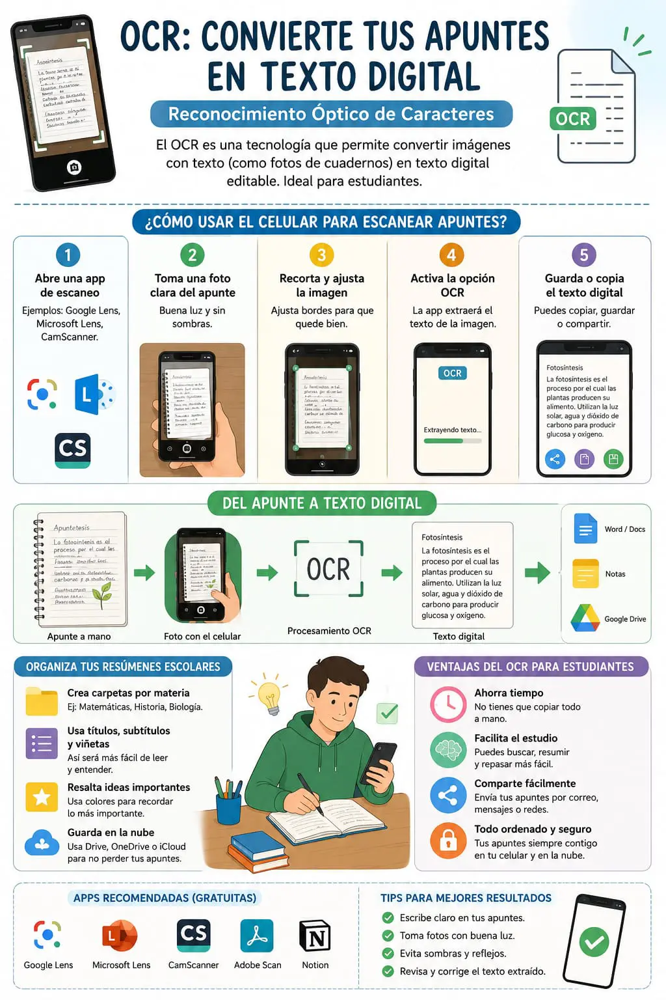

Reconocimiento Óptico de Caracteres (OCR)
El Reconocimiento Óptico de Caracteres, conocido por sus siglas en inglés como OCR (Optical Character Recognition), es una tecnología que permite convertir documentos impresos, fotografías o textos escritos a mano en información digital que puede editarse y almacenarse en un computador o dispositivo móvil. Gracias a esta herramienta, es posible transformar una imagen con texto en un documento que se puede copiar, modificar, buscar o compartir fácilmente.
Actualmente, el OCR es muy utilizado en el ámbito educativo porque facilita la organización de apuntes y materiales de estudio. Un estudiante puede tomar una fotografía de un cuaderno, una guía o un libro y, mediante una aplicación compatible, convertir el contenido en texto digital. Esto evita tener que escribir nuevamente toda la información y permite ahorrar tiempo en las actividades académicas.
El funcionamiento del OCR se basa en el análisis de las imágenes mediante algoritmos de reconocimiento de patrones e inteligencia artificial. El sistema identifica las letras, números y símbolos presentes en la imagen, los compara con una base de datos de caracteres y genera un archivo de texto. Mientras mejor sea la calidad de la imagen, mayor será la precisión del reconocimiento.
Entre las principales ventajas del OCR se encuentra la posibilidad de digitalizar grandes cantidades de documentos de manera rápida y eficiente. Además, facilita la búsqueda de información dentro de un archivo, mejora la organización de los documentos y reduce el uso de papel. También es una herramienta muy útil para conservar archivos importantes y crear copias digitales que pueden almacenarse en la nube.
Existen diversas aplicaciones que incorporan esta tecnología, como Google Lens, Microsoft Lens, Adobe Scan y otras herramientas de escaneo disponibles para teléfonos inteligentes. Estas aplicaciones permiten capturar imágenes con la cámara del dispositivo y convertir automáticamente el contenido en documentos editables o archivos PDF, facilitando el trabajo tanto de estudiantes como de docentes y profesionales.
El OCR también es utilizado en empresas, hospitales, bancos y entidades gubernamentales para digitalizar contratos, formularios, facturas, expedientes y otros documentos importantes. Gracias a esta tecnología, la información puede organizarse de manera más eficiente, agilizando los procesos administrativos y reduciendo el tiempo dedicado a la búsqueda de archivos físicos.
A pesar de sus beneficios, el reconocimiento óptico de caracteres presenta algunas limitaciones. Si la imagen está borrosa, tiene poca iluminación o la escritura es difícil de leer, el sistema puede cometer errores al reconocer algunos caracteres. Por esta razón, siempre es recomendable revisar el documento digitalizado antes de utilizarlo o compartirlo para verificar que la información sea correcta.
En conclusión, el Reconocimiento Óptico de Caracteres es una herramienta tecnológica que ha facilitado la digitalización y organización de la información. Su capacidad para convertir imágenes en texto editable representa una gran ventaja para estudiantes, docentes y profesionales, ya que optimiza el tiempo, mejora el acceso a los documentos y contribuye a un manejo más eficiente de la información en diferentes ámbitos.
